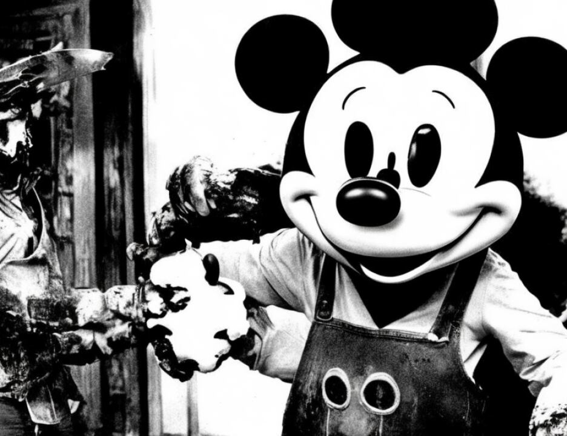

17 Pakistan?
18 A That is my understanding, yes.
19 Q Dr. Lloyd, please look at what has been marked in evidence
20 Defense Exhibit Odeh DD. Have you seen that photo before?
21 A I have seen the photo before, I believe. I'm not quite
22 certain whether this particular one has been seen by me,
23 but --
24 Q You got to speak into the microphone.
25 A I beg your pardon.
4007
1 Yes, I have seen a photograph, or one similar to
2 this, before.
3 Q Did you see the actual bag as well?
4 A Yes, I have seen the bag.
5 Q Dr. Lloyd, looking on your screen, I hope -- thank you --
6 is Odeh Exhibit DD. Is that the bag that you looked at with
7 the clothing in it?
8 A Yes, it appears to be.
9 Q Is it your understanding that that's how these items were
10 contained in the bag before they were taken out and packaged
11 or some of them packaged individually?
12 A It is my understanding, yes.
13 Q Taking you back to the analysis that Kelly Mount
14 performed, is there any indication from any of the documents
15 that you have reviewed or from her testimony that she was able
16 to determine the amount of explosives which she found on these
17 various items?
18 A I've seen no evidence that the amount of explosives on
19 these items was determined.
20 Q As a forensic scientist, is it important to you when you
21 make an analysis of items and you come up with a positive
22 finding to make a determination as to the amount of the
23 explosives on a particular item?
24 A Yes, it is very helpful to do that.
25 Q Could you explain to the jury, based on your knowledge and
4008
1 experience and background, why that's important and helpful?
2 A First of all, very simply, the more explosive there is,
3 the more significant the evidence is likely to be. If there's
4 a large amount of explosive on a person's clothing, that is
5 clearly of greater significance or likely to be of greater
6 significance than if a very tiny trace of explosive is
7 present.
8 If a person has been in recent contact with
9 explosives, with intact explosive or perhaps has been trying
10 to make a bomb or something of that sort, then one would
11 expect to see a large amount of explosive on his clothing.
12 One would not expect to see merely a trace of explosive. It
13 could be a residue from a contact with explosive a long time
14 ago, or it could be a trace picked up because he's been in
15 contact with a contaminated surface, a contaminated person.
16 This sort of information can be indicated to a person if he
17 knows how much explosive was there. In this case, it seems we
18 do not.
19 Q Dr. Lloyd, given the techniques which the FBI used, do you
20 have an explanation or can you determine why the amounts were
21 not identified in this case?
22 A It seems to me that the reasons given by the FBI are that
23 they do not consider this to be an important matter. There's
24 no fundamental reason why the quantities couldn't have been
25 determined, in my view.
4009
1 Q Could the tests that the FBI lab performed, could they
2 have been calibrated to give us some information as to the
3 amount of explosives as well as whether or not explosives were
4 found to exist?
5 A Yes, in my view, without too much difficulty they could
6 have been calibrated to determine the amount of explosive that
7 had been recovered or detected on the items that we're
8 concerned with.
9 Q Are you familiar with the sensitivity of the tests which
2